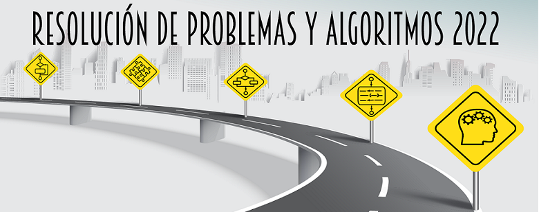

PEDCO-N'T
Primer kahoot MSI
Grafico Notas, Mayo 7, 2022
Recuento de notas del primer Kahoot de Modelos y sistemas de información. Los graficos muestran la cantidad total de alumnos, un recuento general
de notas, alumnos segun su sexo, recuento de notas por sexo, entre otros datos.
Los graficos se realizaron con Power Bi.

Primer parcial IC
Grafico de notas, Mayo 6, 2022
Recuento de notas del primer parcial de Introducción a la computación. Los graficos muestran la cantidad total de alumnos, un recuento general
de notas, alumnos segun su sexo, recuento de notas por sexo, entre otros datos.
Los graficos se realizaron con Power Bi.
Kahoot msi mod 1 & 2
Buenas noticias.
Ya se encuentran disponibles las notas del primer Kahoot de msi, tanto del modulo 1 como del modulo 2.
Podes encontrarlas en Pedco, o en el siguiente link »ejemplo»
Fechas de parciales
-
Algebra
04 Mayo 2022 - Primer parcial
23 Mayo 2022 - RECUPERATORIO Primer parcial
27 Junio 2022 - Segundo parcial -
RPA
16 Mayo 2022 -
MSI
28 Mayo 2022
Contenido materias
-
 Algebra
Algebra
Actualizado 08 Mayo 2022 -

RPA
Actualizado 18 Mayo 2022 -
MSI
Actualizado 28 Mayo 2022